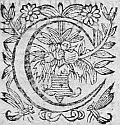
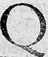
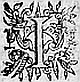
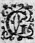

LE
NEUFIESME
LIVRE DE LA
SECONDE PARTIE
D'ASTREE.
Édition de 1610, p. 563.
Édition de Vaganay, p. 355.
CEPENDANT que Leonide, et la venerable Chrysante, alloient cherchant quelque lieu commode pour
s'asseoir, elles apperceurent à travers le bois des
Bergeres qui venoient vers elles : car les arbres qui
estoient fort hauts, et assez esloignez les uns
des autres, leurs troncs fort eslevez, et sans avoir
gueresguiere de branches basses, et la terre sans ronces,
ny autre menu bois ne pouvoient empescher que la
veuë s'estendit fort loin, et que l'on ne veidvid ce qui estoit par delà les arbres. Au commencementη
qu'elles furent apperceuës, et que Leonide demanda
qui elles estoient, il n'y eut personne qui le sçeut
dire : mais s'estant approcheesaprochees , Hilas qui
estoit parmy elles fut incontinent recogneu, et bien-tost apres les Bergeres, qui estoient, Palinice, Cyrcéne η et Florice, avec lesquelles il s'estoit amusé, les ayant rencontrees sur son chemin, sans se souvenirresouvenir de l'escritoire, qu'il alloit querirη . Et n'eust esté qu'elles luy demanderent d'où il venoit, et où il alloit, il ne pensoit plus à ce qu'il avoit à faire, mais ceste demande l'en fit ressouvenir : et les ayant priees de l'attendre il s'en courut prendre l'escritoire, et les ayant retrouvees, leur fit entendre les ceremonies du Tombeau de Celadon, ausquelles elles desirerent d'assister, mais elles arriverent trop tard. Leonide qui avoit sçeu desja qui elles estoientη , voulut les attendre, et Hylas qui ne demeuroit jamais muet, eslevant la voix s'en venoit chantant ces vers, à haut de teste.
SONNET.
Qu'il ne faut point aymer sans
estre aymé.

Q
Uand je vois un amant transi,
Qui languit d'une
Qui languit d'une
un
amour extreme,
L'œil triste, et le visage blesme,
Portant cent plis sur le sourcy.
Quand je le vois plein de soucy,
Qui meurt d'Amour sans que l'on l'ayme,
Je dis aussi-tost en moy-mesme,
C'est un grand sot d'aymer ainsi.
L'œil triste, et le visage blesme,
Portant cent plis sur le sourcy.
Quand je le vois plein de soucy,
Qui meurt d'Amour sans que l'on l'ayme,
Je dis aussi-tost en moy-mesme,
C'est un grand sot d'aymer ainsi.
Il faut aymer, mais que la belleη
Brusle pour qui brusle pour elle,
Ou bien c'est pure lascheté.
L'Amour de l'Amour est extraicte,
La charge n'est jamais bien-faite
faicte
,
Qui panche toute d'un costé.
Qui panche toute d'un costé.
A ces dernieres paroles, ces estrangeres furent si
proches de Leonide et de Chrysante, qu'ayant sçeu
de Hylas qui estoit la Nymphe, elles l'allerent
salüer, et Chrysante, aussi apres que Leonide leur
eut faicteust fait sçavoir qui elle estoit : Et parce qu'Hylas apportoit l'escritoire, et que Philis
s' en rioit :
- Pensez-vous, dictdit -il, Bergere que je ne sois venu en
Forests que pour servir les morts ? Thyrcis qui
n'a autre affaire y peut bien employer le temps,
mais c'est en quoy Hylas s'entend le moins, et pource ne trouvez estrange, que par une honneste
permissionη
, je vous die que si vous ne me voulez tel
que je suis, vous n'esperiez pas de me changer sur
mes vieux jours. Philis qui avoit bien d'autres
choses en la teste : - Je te jure, dictdit -elle, Hylas,
que si tu estois d'autre humeur, je ne t'aymerois pas
tant que je fais.
Maisη
tout ainsi que je ne dois pas
esperer de te changer, aussi ne faut-il pas que tu
penses de me rendre autre que je ne suis : et pource
quand je voudray rire permets que je rie, et que je
me taise quand je ne voudray pas parler, et j'en
feray de mesme te laissant en tes
humeurs :
avec ceste franchise, nous vivrons tous deux bien contentscontens , et sans gueresguiere de peine. - Ah ! ma maistresse, dicteit -il, que je vous ayme, mais plustost que je vous adore, puis que vous estes de ceste humeur : je ne pensois pas en pouvoir jamais rencontrer une telle : Et en disant ces paroles il luy tenoit les jambes embrassees, et la vouloit porter en ses bras, dont elle se deffendoit. Chacun rioit de voir la peine de Philis et l'humeur du Berger : Et cependant Leonide et Chrysante ayant trouvé un lieu qui leur sembloit commode, prindrent leurs places : car quant à Paris il estoit tousjours aupres de Diane, qui n'estoit point un petit desplaisir à Silvandre, n'osant l'approcher pour le respect qu'il luyη vouloit rendre. Cela fut cause qu'estant privé du bien de sa parole, afin d'avoir celuy de sa veuë, il fut contraint de se mettre vis à vis d'elle. Et lors chacun s'estant assis, Palemon et Adraste choisirent leur place au devant de Doris, où ils se meirentmirent tous deux à genoux, sans vouloir s'en oster, quoy que la NympheNimphe ou la venerable Druyde leur puissent dire. En fin la Bergere commença de parler en ceste sorte par le commandement qui luy en fut faictfait .

J'AY tousjours eu ceste opiniongrande et sage Nymphe, et vous venerable Chrysante, que s'il y avoit quelque chose entre les hommes qui les peust obliger les uns aux autres, ce devoit estre l'amitiéη : et si cela est vray ou faux j'en laisseray le jugement à celles qui ont esté aimeesaymees : tant y a que suivant cette croyance, apres l'avoir esté longuement de ce Berger, je pensay d'estre en quelque sorte obligee de luy rendre amitié pour amitié. Il est vray que comme d'ordinaire les commandementsη sont tousjours peu de chose, à la naissance de cette bonne volonté, je ne jugeois pas qu'elle peust jamais devenir telle que je l'ay depuis ressentie. Mais elle pristprit insensiblement une si profonde racine par une longue conversation, que quand je m'en apperceusapperceu , il ne fut plus en ma puissance de m'en deffaire : et par ainsi je l'aymayaimay de façon que s'il m'avoit rendu la premiere preuve de son affection, je luy tesmoignay depuis mon amitié en tant de sortes, que comme je ne voulois point douter de la sienne, aussi ne le pouvoit-il de celle qu'il desiroit de moy, pour le moins avec la raison. Toutesfois je ne sçay comment pour mon mal-heur, quand il en fut plus asseuré, ce fut lors qu'il me fit paroistre
d'en
avoir plus de meffiance, si bien que ce ne luy futfeust pas
assez de me retirer de la frequentation de tous ceux
que j'avois accoustumé de voir, mais vouloitvouloir
encoresencore que tous les autres fussent privez de la mienne, ne
se contentant plus que je ne visitasse une seule de
mes compagnes, mais si quelqu'une me venoit trouver,
ce luy estoit chose insupportableinsuportable .
VoyezVoiez
η
quelle offence il me faisoit ayantaiant une si
mauvaise opinion de moy par sa jalousie : et jugez
pour Dieu en quelle extreme tyrannietirannie son amitié
s'estoit changee, et toutesfois plustosttoutefois plutost que de luy
desplaire, j'esleus de perdre entierement la bonne
volonté de toutes mes voisines, que de luy donner
quelque mauvaise satisfaction de moy. Les Dieux
sçavent avec quelle peine je le peus, non pas que
je n'eusse un tres-grand contentement de faire chose
qui luy futfust agreable : mais si
falloitfaloit -il m'y conduire
avec une grande contrainctecontrainte , et avec une prudence qui
ne fut pas moindre pour ne donner occasion de
mescontentement à celles que j'esloignoiseslongnois de ma
compagnie. J'y parvins le plus doucement qu'il me fut possible,
et le contentay, de sorte qu'il sembloit que j'eusse
quelque maladie contagieuse, tant je demeurois retiree des Bergers et des Bergeres qui me souloient
practiquerpratiquer.
Que si cetteceste jalousie procedoit de l'affection qu'il
me portoit, n'estoit-il pas pour le moins obligé
de faire autant pour moy qu'il me contraignoit de
faire pour luy ? Mais au contraire durant tout ce
temps de ma vie que je puis bien appellerapeller sauvage
(car veritablement telle estois-je devenuë
pour luy
estre agreableaggreable ) de tout le jour je ne le voyois qu'un
moment : mais je dis un moment si bref qu'en verité
je ne faisois que le voir, ne me donnant ny la
commodité ny le loisir de luy pouvoir dire presque
une parole, sans que le cruel considerast que puis que pour luy je me privois de tout autre, s'il ne
pouvoit estre tout le temps à moy, il le devoit estre
pour le moins la plus grande partie.
Et jugez si je n'ay pas occasion de dire que son
affection s'estoit changee en Tyrannie, puis qu'encorencor' il pensoit que je luy enη
deusse de retour,
imitant en cela les autresavares
η
qui au commencement retranchent leur despence soubsdepence sous ombre d'estre bons
mesnagers, et en fin viennent à une telle espargne
qu'ils s'ostent à eux et
à ceux qui les servent, les moyensmoiens de pouvoir vivre.
Car je croy bien que sa vie n'estoit pas plus agreable
que la mienne, sinon en tant que la sienne estoit
volontaire. Et voyez si je l'aymoisaimois , et si j'estois
bonne. Il usa de ceste tyrannie sur moy, sans que
j'en murmurasse jamais aussi longuement qu'il luy
pleut : et si jamais il ne l'η
eusteut quittee, jamais je
ne m'en fusse soustraictesoustraitte , et la derniere preuve que
je luy rendis de mon obeyssance (car telle la puis-je
dire, et non pas seulement affection) fut telle
qu'elle devoit estre plus que capable de luy oster
toutes ces fascheuses et estranges humeurs.
Il faut que vous sçachiez, grande
Nymphe, que je suis
demeuree fort jeune sans pere et sans mere, entre les
mains d'un frere qui pour avoir plus d'aage que moy,
et pour l'amitié qu'il m'a tousjours faitfaict paroistre,
m'a tenu jusques
icy lieu de pere, soit en la conduicteconduitte de ma personne, ou en celle de mon bien, ayant receu en toutes les occasions qui se sont presentees tant de bons offices de luy, que je puis en cela luy donner nom de pere. Estant tel, jugez s'il falloitfaloit , et si la raison mesme ne me commandoit que je me conformasse le plus qu'il m'estoit possible à toutes ses humeurs et volontez, et s'il y avoit apparence que je le deusse contrarier. Palemon toutesfoistoutefois sans consideration de toutes ces choses, vouloit qu'absolument je m'en retirasse : non pas que je sortisse de sa maison : car il ne voyoit lieu où je peusse aller, mais ouy bien que desdaignant ce qui leη contentoit, je ne fisse point d'estat de ceux qu'il aimoitaymoit , voire leur defendissedeffendisse ma veuë. Ceux qui ont esté soussoubs l'authorité d'autruy, sçauront si cela est faisable ou non, toutesfois pour luy faire cognoistre qu'il ne voudroit jamais tesmoignage de mon amitié que je ne m'efforçasse de luy rendre, encoresencore entrepris-je de le satisfaire en cecy. Mon frere aymoit entre tous ses voisins un Berger qui s'appelloit Pantesmon, homme à la verité qui avoit toutes les bonnes conditions qui peuvent rendre une personne aggreable. Il estoit sage, courtois, pleinplain de respect, officieux, courageux, et bon amy, et sur tout parmy les Bergeres le plus discret de tout le hameau : ces qualitez convierent mon frere à l'aymer, et l'amitié r'apportarapporta une si ordinaire practique entre eux que mal-aysément se voyoient-ils l'un sans l'autre. Or il faut que j'advoüe
qu'encor qu'il eusteut de l'amitié pour mon frere autant qu'il en pouvoit avoir, toutesfois l'amour ne laissa de trouver place en son cœur : car je ne sçay s'il remarqua quelque chose qui luy pleustpleut en moy, ou si la familiarité qu'il avoit avec le frere fist naistre de la bonne volonté, pour la sœur, tant y a qu'il est vray que je recogneusrecognus bien qu'il m'aymoit, et voyez si je ne vivois pas franchement, et comme je devois avec Palemon. Aussi-tost que j'en eus cognoissance je le luy dis, et luy allois par apres racontant toutes ses actions, et toutes les demonstrations d'amitié que je remarquayremarquoy en luy : Si j'eusse eu quelque dessein, jugez si j'en eusse usé de ceste sorte. O Dieux quel respect, quel honneur et quelle soubmissionquel soumission me rendoit ce Berger ! Ses merites et son affection estoient bien dignes d'estre aymez, et mesmes accompagnez de la volonté que mon frere en avoit, qui comme j'ay cogneu depuis, faisoit dessein de nous marier ensemble. Mais que je ne puisse de ma vie avoir bienη , si jamais j'eus seulement opinion que je luy peusse vouloir du bien plus particulierement qu'aux autres amisamies de mon frere ; au contraire je recevois sa recherche avec plus de froideur, que de plusieurs autres. Car sçachant qu'il avoit de l'amour pour moy, il me sembloit que de le souffrir sans peine c'estoit faire tort à l'affection de Palemon, au lieu que les autres n'y estants poussez que de la civilité, ne pouvoient me faire ceste offence. Ce fut à celuy-cy que Pamelon voulut que je deffendisse
de me voir. Considerez comme je le pouvois bien faire ! Aussi si η Pantesmon n'eust eu plus de volonté de m'obeyr, que ce Berger de raison en ce qu'il demandoit, je ne sçay comme à ce coup j'eusse peu luy satisfaire, car en quelle sorte luy pouvois-je interdire la maison de mon frere, qui l'aymoitaimoit peut-estre autant et plus qu'il ne m'aymoitaimoit pas ? ToutesfoisToutefois quand je le retiray à part, et que je luy fis sçavoir ma volonté : - Non seulement, me dictdit -il, je vous veux faire paroistre que je vous ayme par les effets de mon amitié, mais par ceux aussi de vostre hainehayne . Vous me bannissez sans raison de vous, et je veux que le tort que vous avez en cela vous rende tesmoignage de mon affection, vous faisant voirveoir combien vous avez de pouvoir sur moy, puis que sans murmurer je vous obeys en un commandement tant injuste. Je me retireray donc de vostre veuë, pour vous contenter. Il est vray que perdant ce bon-heur, je ne perdray jamais l'affection que je vous porte, encoresencore que je la doive esprouverespreuver infructueuse tout le reste de ma vie. Aussi ne vous ay-je jamais aymee que pour vous aymer. - Pantesmon, luy dis-je, l'entiere puissance que vous me donnez sur vous, me fait avoir plus de regret de vous esloigner de moy que je n'eusse pas estimé. Et suis bien marrie que vous m'ayez trouvee en estat que je ne puisse disposer de ma volonté : car vos merites et l'affection que vous me faictesfaites paroistre me font avoir du desplaisir de ne pouvoir davantaged'avantage pour vous. Mais croyez-moy pour veritable, et soyez asseuré,
que ce n'est point sans raison ny sans regret que je vous faisfay ceste priere. Si vous pouviez avoir quelque esperance en moy, vous auriez plus de subject de vous fascher ; mais puis que cela n'est pas, quel plaisir auriez-vous si vous m'aymezaimez de me rendre miserable, sans qu'il vous en revienne autre advantage que mon desplaisir ? - Il ne faut point, me respondit-il, que vous me le persuadiez avec plus de paroles ; mon affection qui tient entierement le party de vostre volonté, m'en represente plus que je ne vous sçaurois dire. Je feray jusques à la mort tout ce que vous m'ordonnerez, sans autre dessein que celuy de vous obeyr. Toutesfois si mon affection, si mes services, et si mon obeyssanceobeïssance en ceste derniere action doivent esperer quelque chose de plus advantageuxavantageux , que d'estre chassé de vostre presence sans aucune demonstration d'amitié, je vous supplie, et si toutes ces choses n'ont point de pouvoir envers vous, et que ma consideration ne soit point assez forte, je vous conjure par ce que vous aymez le plus, et qui peut estre est cause que vous me bannissez ainsi, que pour la fin de mon espoir, et pour la derniere importunité que vous recevrez de cet infortuné amant, vous me permettiez qu'en vous disant ce dernier et eternel Adieu, je puisse vous baiserη et la bouche et le sein. Je rougis certes, ô grande NympheNimphe, en le racontant (dictdit -elle, se mettant une main de honte sur le visage) mais il faut que je l'advoüe, il est vray, jeη le luy permis, me semblant
que sa bonté m'y
obligeoit, et de plus que j'eusse faictfait tort à
l'amitié que je portois à Palemon, si je n'eusse
accordé la requeste qu'il me faisoit en me conjurant
par luyη
. Incontinent apres il partit, et depuis il
ne s'est jamais trouvé en lieu où il m'ait peu voir.
Or toutes ces preuves de mon amitié n'estoient-elles
capables d'obliger à jamais envers moy cet ingrat et
mescognoissant Berger ? Et toutesfois il advint au
contraire, car tant s'en
fallutfalut qu'il m'en sceust gré
que depuis je ne le vis plus, je ne diray pas comme
amant, mais non pas mesme comme amy. Je voulus
sçavoir l'occasion de sa retraitte, et une de mes
plus fidelles amies qui l'alla trouver de ma part ne
me rapporta autre responce de luy que ce mot.
Amour chasse l'Amour comme un clouη
chasse l'autre.
Je me η jugeay alors deux choses : La premiere qu'estant devenu amoureux de quelque autre Bergere, il avoit par ceste seconde amour chassé la premiere qu'il me portoit, et l'autre qu'avec mespris il me conseilloit d'en faire de mesme. Si cela me fut fascheux à supporter, je n'ay point affaire de le redire, et m'en tairaytayray quand ce ne seroit que pour ne fortifier point davantaged'avantage ce glorieux Berger, en la bonne opinion que sa vanité luy donne : mais fasse le Ciel que nos plus grands ennemis en ressentent les moindres traitsη . Or estant ainsi delaissee, encor qu'il me fust infiniment necessaire de m'armer contre cest accident de quelques bonnes et fortesfort armesη , si ne voulus-je me servir de celles que cet ennemy
m'avoit envoyées, tant pour les juger honteuses que
pour ne me prevaloir de chose qui vint d'une
personne à qui j'avois si peu d'occasion de vouloir
du bien, outre que les mesprisant comme siennes je
les croyois indignes de moy, et infidellesinfideles aussi bien
que j'estimois leur inventeur perfide. Je recourus
donc à d'autres qui estoient plus tardives certes en
leurs effects, mais aussi plus selon mon humeur, qui
furent celles du tempsη
: le temps dis-je, fut l'arme
et celuy mesme qui m'enseigna de me servir de ceste
arme : Le temps fut mon Medecin et ma Medecine. Et à
la verité selon la coustume des choses qui se font
lentement. Le bien de ceste guerison n'a pas esté pour
un jour, ny la deffence de ces armes pour un assaut seulementη
; mais Dieu mercy pour le reste de ma vie.
Je dis Dieu mercy avec beaucoup de raison. Car
grande
Nymphe, quand je repasse par ma memoire la vie
que j'ay faite, tant que ce perfide à montréa monstré de
m'aymeraimer , et que je me represente celle où je suis à cette heureà ceste heure : il faut par force que j'advouë qu'il m'a plus obligee en me trahissant, que Pantesmon en
m'obeyssant : car ce n'estoit pas vivre, mais estre
esclave, que de demeurer en l'estat où sa Tyrannie
me retenoitη
.
Or ce desloyal estant comme je crois envieuxenvyeux de la
douceur de ma vie, oùou n'estant pas contentcontant d'avoir
triomphé une fois de moy, àa
voulu rebastir ses
trahisons : Et comme au commencement, il me surprist
par soubmissiosurprit par soubmissions n et par de tres-grandes
demonstrations d'une violenteviolante
η
amitié, il a creu en
pouvoir faire de mesme
à ce coup, et c'est pourquoy
vous le voyez ô grande et sage NympheNimphe à genoux devant moy, usant des
paroles telles que ceux qui ayment veritablement ont
accoustumé de dire. Mais il n'a pas consideré que
m'estant recogneuë plus foible de ce costé là, que
de tout autre, j'ay tasché de m'y fortifier
davantaged'avantage : et me semble que son opiniastreté
devroit estre desormais vaincuë par la resistanceressistance que je luy ay faictefaite , si ce n'estoit que, comme je
croy, qu'ilη
ayme mieux se travailler et me desplaire,
que de vivre en repos : et semble qu'il cherisse
davantaged'avantage ce qui m'ennuye que ce qui luy peut estre
profitable.
Ilη
continuë donc ses fainctesfaintes , et renouvelle, au lieu
d'Amour un si aspre desdain en mon ame, que sa veuë
m'est plus insupportable, que sa perfidie ne me le fustfut jamais, et faut advoueravouër qu'il vient fort bien à bout
de son dessein, si son dessein est de me desplairedeplaire .
Que si cela n'est pas, comme il jure, et comme il
tasche de me persuader, et que par juste punition des
Dieux il aytait veritablement ralumé sa flamme esteinteflame estainte ,
à qui faut-il qu'il s'en prenne qu'à luy mesme, puis qu'il est le seul autheur de son mal, et que c'est
luy qui s'est preparé ce supplicesuplice , sans que j'y aye
rien contribué du mien, non pas les vœuxvœus seulement ?
J'advouë qu'en me vengeant de la meschanceté qu'il
m'a faitefaicte , et que cese
η
chastiant de sa perfidie, par
les mesmes armes dont il m'avoit offencee, il est
homme plus juste, qu'il n'est bon Amant. Mais pourquoy
m'accuse-t'il de
sa peine, moy dis-je, qui ne veuxveus pas mesme avoir memoire qu'il soit au monde ? Ou
pourquoy veut il que je luy remette les armes en la
main, desquelles en pensant me blesser il s'est
offencé luy-mesme ? C'est une trop lourde
imprudence de chopper deux fois contre un mesme bois.
Il ne doit point esperer cela de moy, qui ay les
images de ma vie passee, trop vives encor en l'ame,
pour ne les voirveoir point toutes les fois que je
tourne les yeux sur luy. Qu'il se retire donc et me
laisse joüirjouyr du bon heur qu'il m'a luy mesme acquis,
quoy que ç'ait esté avec un dessein bien contraire.
Mais si le ciel, selon sa coustume, a tiré du mal
qu'il me preparoit un si grand bien pour moy, qu'il ne
soit point marry si j'en jouys, et si je sçay mieux
me prevaloir de la faveur qu'il m'a faictefaite en cela,
que luy de celles que je luy ay faictesfaites par le passéη
,
et qu'il juge et confesse que justement le Ciel a
pris la cause et la deffence de mon innocente amitié
contre la personne la plus ingratte, et la plus perfide
qui ait jamais esté bien aymee. Que si comme les
joüeurs qui perdent, il demande quelque chose pour
sa derniere main, voicy, sage et grande
Nymphe,
tout ce que je puis pour luy. Je luy advoüerayavoüeray que
je suis assez satisfaictesatisfaite de son ingratitude, que je
luy quitte l'offence, que la vengeance qu'il m'a
faite me plaist, voire afin qu'il se retire
entierement de moy, que j'ay pitié de son mal, mais
que cela luy suffise, et qu'il ne m'importune plus.
Ainsi finit la Bergere avec une telle emotion que la
couleur qui luy en estoit venuë au visage la rendoit
plus belle qu'elle ne souloit estre :
Et lors que Leonide cogneut qu'elle ne vouloit rien dire davantaged'avantage , elle fist signe à Palemon de respondre, s'il avoit à dire quelque chose contre ce qu'elle leur avoit fait entendre. Alors le Berger se relevant apres avoir salué sala Nymphe, luy parla de ceste sorte.
GRandeNympheNimphe, je cognoiscognoy bien estre tres-veritable,
ce que j'ay tousjours ouy dire de la divinité, que
jamais les Dieux et Deesses n'entrent en un lieu
sans y faire quelque bien, puis que vous, qui par
vostre merite et vostre condition en representez
l'image parmy
nous, n'avez presque esté plustost
en ce lieu que me voila detrompé, et sortisorty de l'erreur
où j'ay si longuement vescu, si toutesfois on peut
appeller vie ce qui raporte plus de mal que la mort
mesme. J'advoüe que tout ce que ceste belle Bergere
vient de vous raconter, est veritable, et que je luy ay
plus d'obligation encore qu'elle ne sçauroit dire :
mais si faut-il qu'ayant ouy de sa bouche ce qu'elle
vient de me reprocher je me plaigne que le Ciel
comme envieux de mon ayse, m'ait caché la plus grande
partie de mon bonheur : Et croirois d'croyroisavoir plus
d'occasion de m'en douloir et de l'accuser
d'injustice, si je ne cognoissois
bien, que c'est ainsi que tous les hommes sont traittez, afin qu'il n'y ait point ça-bas de parfaictparfait contentement. Toutesfois si faut-il que l'on me permette de me douloir du tort que ceste belle Bergere à faicta fait à l'amitié qu'elle m'avoit promise, puis qu'elle ne peut trouver occasion de se douloir de la mienne que par le soupçon, et se desguisant à mon desadvantage, ce qu'au contraire elle devoit prendre pour plus grande asseurance de mon affection. Mais comment, ô Amour, m'oseray-je plaindre d'elle, puis que tu me commandes de ne trouver mauvais chose qu'elle vueilleveüille faire ? Je n'useray donc point de plainte : car mon cœur ne la desdira jamais en rien. Mais, ô sage NympheNimphe, j'essayeray en vous disant la verité de vous faire entendre que Palemon sçait aymeraimer , et que c'estcest sans raison que Doris a creu le contraire. Et pour commencer, et ne point user de longslong discours, elle advouë que je l'ay aymee et qu'elle m'a ayméaimé , mais que me reproche t'elle pour avoir subjectsujet de rompre ceste amitié ? Que j'ay esté jaloux, et je confesse que je l'ay esté : mais si elle m'a ayméaimé ainsi qu'elle dit, pour avoir recogneurecognu que je l'aymoisaimois , comment a t'elle eu aggreableagreable mon amitié, et non point l'effect de mon amitié ; si tous ceux desquels elle estoit veuë me donnoient de la jalousie, et si leur conversation, leurs paroles, voire leurs regards mesmemesmes estoient soubçonneuxsoupçonneux, n'estoit-ce un tres-certain tesmoignage que je l'aymois infiniment ? Elle dit toutesfoistoutefois que de douter d'elle, c'estoit l'offencer, et en faire un sinistre jugement. Ah ! grande NympheNimphe, si cestecette
Bergere sçavoit aussi bien aymeraimer que ses yeux se sçavent faire adorer, ne diroit-elle pas plustost que c'estoit uneun' extreme Amour, et la trop bonne opinion que j'avois d'elle qui me le faisoient faire ? Car si je ne l'eusse creuë digne d'estre servie de tous, comment eusse-je creu que tous l'eussent servie ? mais si je n'eusse eu cestecette creance, comment eusse-je esté jaloux de chacun ? Ceste jalousie donc, ô belle Doris, n'est point un moindre signe d'affection et d'une tres-violente amourη , que les souspirs et les larmes, dont les amantsAmans vont noyantnoïant les mains de leurs bien aymees : puis qu'elle naist de la cognoissance de la perfection de la personne que l'on ayme, et les souspirs et les larmes procedent le plus souvent de la cruauté seulement qu'ils trouvent en elle, ou du tourment qu'ils en ressentent. Cognoissant donc, ô grande NympheNimphe, que j'estois jaloux, ne devoit-elle pas augmenter la bonne volonté qu'elle me portoit, pour balancerbalencer en quelque sorte la pesanteur que j'alois adjoustant à la mienne ? Au contraireη , qu'est-ce que sa cruauté, ou pour le moins sa mescognoissance luy conseilla de faire ? Vous l'oyez de sa propre bouche. Elle se deslie de ceste estroitte amitié que tant de services que tant de cognoissances d'une vraye affection devoient avoir renduë indissoluble, et pour s'en donner quelque pretexte, se figure des rafroidissemensrafroidissements de mon costé, et des nonchalances, qui helas ! n'estoient qu'en son opinion. Elle dit qu'en ce temps-là je ne demeurois guereguiere aupres d'elle. QuantQuand je considere
ce reproche, il faut en fin que j'advouë que toutes les actions peuvent estre soupçonnees contraires au dessein de celuy qui les fait, puis que les effectseffets mesmes qui s'en produisent ne sont le plus souvent apperceus de ceux qui y η ont le plus d'interest. Si je vous demande, ô belle Doris, quelle opinion vous avez euë de moy dés le commencement que ma fortune m'appella pres de vous, pour ne vous contredire, je m'asseure que vous avoüerez que je vous ay aymee et servie avec tantautant d'affection que jamais Berger ayt peu aymer ou servir. Or maintenant n'ayez point desaggreabledesagreable , je vous supplie, que devant ceste grande Nymphe, et cestecette venerable Druyde, je vous conjure de dire quellequ'elle a esté la Bergere pour qui je vous ay changee, et à qui vous m'avez veu rendre du devoir, ou seulement l'avez ouy dire ? Que si vous n'en sçavez point, et si vous confessez que mon affection n'a point esté distraittedistraite ailleurs, pourquoy vous plaignezpleignez -vous, et pourquoy avez-vous soupçonné mes actions tout au contraire de mon dessein ? C'estoit ce me semble tres-mal conclurre à vous : Palemon m'a aymeeaimee : mais parce qu'il ne me voidvoit pas si souvent que de coustume il ne m'ayme plus ; Tant s'en faut, n'estiez-vous point plus obligee par les loix de l'amitié de dire, Si mon Berger ne me voit point si souvent que de coustume, je sçay que c'est quelque necessaire contrainte qui l'empesche. Compatissant ainsi au mal que je souffrois esloigné de vostre presence, et jugeant autruy par vous mesme, vous n'eussiez pas offencé si cruellement celuy qui
n'offença jamais l'affection qu'il vous a promise.
Mais me direz-vous que vouloient donc signifier
ces demy-moments qui aà peine vous pouvoient retenir
aupres de moy, au lieu qu'auparavant les jours les
plus longs ne vous pouvoient pas contenter ? Je le
vous diray ô sage Nymphe, et je m'asseure qu'en
m'escoutant vous ne ferez point un si sinistre
jugement de moy, que ceste belle a faictfait de ma
fidelité, et seulement je la supplie de se
ressouvenir de la vie que je menois en ce temps-là,
et parmy quelles compagnies on me voyoit demeurer.
Je puis dire avec verité, ô grande
NympheNimphe que jamais
homme n'a vescu plus sauvagement que moy, non pas mesme ceux qui font profession de ne demeurer que parmy les rochers, et les deserts, sinon durant les
momensmoments que mon affection me contraignoit une fois
le jour de la voir. Car dés que la clarté commençoit
de paroistre, je sortois de ma cabane, et loing de
toutes compagnies, je ne revenois que la nuict
ne fust close, demeurant quelquesfoisquelquefois caché dans les
antres les plus retirez, et quelquesfoisquelquefois dans le plus
haut des montaignesmontagnes , tellement seul, que rien que mes
pensees ne pouvoient me trouver, mais elles ne
tenoient aussi si bonne compagnie qu'elles me
contraignoient bien souvent de me mettre en lieu d'où
je pussepeusse voir l'endroit de sa demeure, me semblant
que les heureuses murailles où elle estoit, me
rapportoient une espece de consolation qui n'estoit
pas petite, sans que rien me retirast de ceste sorte
de vie, non l'amitié de mes voisins, non le devoir
de mes parens, non
le soucy de mes trouppeauxtroupeaux bien-aymez, ny bref que l'on peust dire de moy, sinon le
seul desir de sa veuë dont je joüyssoisjouïssois tous les
jours une fois, mais si peu de temps à mon grand
regret que quand je m'en retournois, il me sembloit
que je ne faisois que d'y arriver. Et toutesfoistoutefois celle qui se deult de cetteceste vie en estoit la seule
cause, et l'extreme affection que je luy portois
m'empeschoit de la luy descouvrir.
Or sage et grande
NympheNimphe, j'ay tousjours eu cetteceste
opinion que celuy qui ayme comme il doit, doit avoir
plus cher l'honneur de la personne aymeeaimee que le
contentement qu'il en peut retirer, la malice des
hommes mal-pensants n'aytayant
η
jamais esté si foible,
qu'elle n'ayt tousjours trouvé subject de s'employersujet de s'emploier où il luy a pleu ne luy
fit en ce temps là plus de
grace à nostre amitié qu'elle a accoustumé de faire
à toutes les autres plus remplies de vertu, de sorte
que nostre ordinaire frequentation fust desapreuvee,
et donna subjectsujet à ces malins d'en parler assez mal à
propos, si sourdement toutefois que les autheurs de
ces impostures quelque diligence que j'y employasse
me furent tousjours de sorte incogneusincognus , que je ne puispus trouver à qui m'en prendre. Que pouvois-je faire en
cela ? D'entreprendre un bien long voyage, je
n'estois pas maistre entierement de mes actions, de
cesser de l'aymer j'eusse plustostplutost cessé de vivre.
Puis donc que nostrenôtre trop grande practiquepratique estoit celle
qui donnoit quelque apparence de vivreverité
η
à leur
mesdisancemedisance , à quoy me devois-je plustost resoudre qu'à
l'interrompre
pour quelque temps, et à payer ainsi
plustost aux despens de mon contentement que de sa
reputation la faute de ces meschantes ames ? Que si
elle se plaint que je ne luy en aye rien dit jusques
à cette heureà ceste heure, qu'elle se plaigne aussi que je l'ay
trop aymee, car veritablement ç'aça esté pour l'avoir
trop aymee, que j'ay plustost choisi de me priver du
bon-heur de sa veuë,
voire mesme lela
η
laisser en doute de mon affection, que
de luy dire l'occasion qui me faisoit vivre avec elle
de cetteceste sorte, de peur de luy faire part de l'ennuy que j'en ressentois, sçachant assez qu'elle qui avoit
tousjours si curieusement conservé sa vie exempte de
ces calomniesη
, ne les sçauroit
supportersuporter qu'avec de
trop grands desplaisirs.
Or considerez grande
NympheNimphe par ce veritable
discours, si tels effects se voyent parmy les
vulgaires affections, et de là prenez cognoissance
s'il vous plaist, de quelle qualité doit estre la
mienne : et si estant telle c'estoit sans raison,
qu'elle demandoitη
à ceste Bergere, de grandes preuves
de la sienne, puis que l'Amour ne se paye qu'avec
l'amour. Et toutesfois ce qui advint de Pantesmon
qui est ce me semble le plus grand subjectsuject de plainte
qu'elle ayt contre moy, ne proceda pas seulement
d'une jalousie mal-fondee comme elle dict, mais de
beaucoup de raison. Car ainsi qu'elle vous a advoüé,
ce Berger est tel, et aà tant de bonnes conditions qu'il est plus croyable que celle qu'il recherchera le
doive aymeraimer que mespriser. De plus l'amitié que son
frere luy portoit, ne m'estoit point suspecte sans
cause, mais encore
plus, le bon accueil qu'elle luy
faisoit, qui à la verité estoit tel, qu'ayant
comme elle dit si bien recogneurecognu ma jalousie par le
passé, elle avoit plus de tortη
d'en user ainsi que
moy de penser, quoy que ce fut à son desadvantage :
et de faictfait qu'elle die si cela ne fut pas cause que
tout ouvertement on parloit de leur mariage. Si oyant
ces nouvelles je n'eusse point esté esmeu,
n'eusse-je pas plus offencé nostre amitié, qu'elle
son frere, en faisant ce que je requerois ? Que si
l'amitié a plus de privilege que l'amourη
, elle a bien
quelque occasion de se douloir de moy : Mais si cela
n'est pas, pourquoy trouve-t'elletelle estrange que mon
amour ait voulu triompher de l'amitié qu'elle portoit
à son frere ?
Et c'est d'icy grande
Nymphe, que tous mes malheurs
ont pris leur origine. Car luy reprochant la bonne
chere qu'elle faisoit à ce Berger, elle me respondit
que l'amitié que son frere luy portoit en estoit
cause : mais quand je luy repliquay que le bruit de
leur mariage estoit si commun qu'il m'estoit
impossible de vivre tant qu'il continuëroit et que
je verrois le contentement de qui elle prefereroit.
- Et à quoy est-ce (me dit-elle en changeant de
visage) que vostre bisarre soupçon me veut encores
contraindre ? - Vous le nommerez, luy dis-je, comme
il vous plaira, mais je n'auray jamais repos que je
ne voye ce Berger eslongnéesloigné de vous. - Et
bien (me dit-elle d'une voix toute alteree) je vous conteraycontenteray
η
encor en cecy, et Dieu vueille que ce
soit la derniere fois que vous prendrez de semblables
humeurs. Elle profera de sorte ces
paroles qu'elles redoublerent beaucoup plus mon soupçon que si elle m'eust avec quelque excuse entierement refusé. Ce qui me fit resoudre d'en apprendre une fois en ma vie la verité, et pour m'en esclaircir mieux je ne voulus me fier qu'à mes yeux propres. O mal-heureuse meffiance ! ô dommageable resolution, qui depuis m'a cousté tant d'ennuis, de travaux et de larmes ? En ce dessein donc j'espie le temps que Pantesmon la vint trouver en sa chambre, car de fortune ce jour elle tenoit le lict, fust de desplaisir, fust pour quelque legere maladie : Et passant par une montee desrobee qui entroit dans le logis, je vins par un passage caché me mettre dansen un cabinet dont la porte respondoit sur le lict. Mon malheur fut tel que par la fente des aix, je peux voir tout ce qu'ils firent, mais pour estre trop esloigné je n'en ouys une seule parole. Je vis doncquesdonques , et trop certes pour mon contentement que le Berger s'assit d'abord sur le pied du lictlit , et apres luy avoir pris la main, qu'il baisa plusieurs fois sans resistance parla fort long temps la teste nuë : je vis qu'elle luy respondoit, et à ce que je pouvois remarquer à son visage, ce n'estoient point paroles de courroux. Que si la fortune m'eust permis de voir aussi bien celuy de Pantesmon, peut-estre y eusse-je apperceu quelque mescontentement qui m'eust contentéη , mais il me tournoit presque le dos, pour luy parler plus bas. Et lors que j'estois en ceste peine, je vis que tout à coup il se jetta à genoux, et elle se releva un peu sur le lict, et apres se penchapancha et le baisa. Dieux quel coup de cousteau
receus-je, mais plus encoresencore quand le Berger ne se contentant point de ces
extraordinaires faveurs, luy descouvrit le sein, et
sans resistanceressistance le luy baisa. Amour quel devin-je ?
mais ô Dieux quel devois-je devenir ! Je ne sçay
comme je puispus le souffrir et vivre, si ce n'est que
tout ainsi que mon affection estoit celle qui m'en
faisoit avoir de si extremes ressentimensressentiments,
elle mesme aussi me donnoit de la constance de
supportersuporter ce que je pensois luyη
estre agreable. Pantesmon partit et je partis aussi, luy pour moy
mal satisfaictsatisfait , et moy pour luy entierement desesperé.
Voyez comme Amour nous chastioitchastyoit l'un par l'autre.
Or dites-moy je vous supplie sage NympheNimphe,
eussiez-vous creu que j'eusse ayméaimé , si je n'eusse
point ressenty un coup si sensible,
et le ressentiment pouvoitη
-il estre moindre que de me retirer, ou pour le moins pouvoit-il estre accompagné de
plus de discretion que de n'en parler à personne ?
J'advouë que j'essayay de r'avoir ma liberté : et
lors que je trouvois plus de difficulté à desmeslerdémesler les liens dont elle me tenoit pris, je dis plusieurs
fois en moy-mesmemesmes , qu'il falloit couper ceux qui ne
pouvoient estre dénouez. Et sur le point que je
faisois le plus d'effort contre ma volonté, il est
vray qu'elle m'envoya l'une de ses amies. Mais
quel pouvois-je penser que futfust ce message, qu'une
continuation de sa tromperie ? Estoit-il possible
de desmentirdesmantir de si fidellesfideles tesmoins que mes propres
yeux, et sur ceste creance je luy fis tout en cholere,
la responce dont elle se plaint : à sçavoir, qu'un
clouη
chasse l'autre, mais quel moindre reproche
luy pouvois-je faire ayant opinion d'avoir esté si ingrattementingratement trahy ? Outre que j'y estois obligé par les loix de mon affection, qui ne me pouvoient permettre de luy mentir à ceste fois non plus que je n'avois jamais faictfait par le passé. Si elle le print autrement que je ne l'entendois son innocence en estoit cause, et l'erreur en quoy j'estois me faisoit parler ainsi. Je voulois bien qu'elle cogneust que je sçavois qu'une autre amour avoit chassé la mienne de son cœur, et toutesfois la crainte que j'avois de luy donner du desplaisir, m'a jusques icy privé de mon plus grand contentement. Car lors que quelquesfoisquelquefois je me resolvois de luy faire les reproches, que je pensois estre dignes d'une si grande trahison, Amour qui a tousjours eu le plus de force sur mon ame, m'en empeschoit, et me faisoit changer d'advis, en me disant, que ce seroit trop offenseroffencer celle que j'avois tant aymee de luy faire honte d'une si grande faute et tant indigne d'elle, et que je me devois contenter d'estre hors de la tromperie où j'avois esté si longuement retenu. Je creus ce conseil tres-mauvais pour moy : car c'est sans doute que si dés le commencement je luy eusse ditdict ce que j'avois veu, elle m'eust raconté ce qu'elle avoit fait, et ainsi j'eusse eu autant de bon-heur et de contentement que j'ay souffert depuis de sanglanssanglants desplaisirs. Au contraire m'esloignanteslongnant entierement d'elle, je ne peus de long temps sçavoir que Pantesmon ne la voyoit plus, et le mal estoit que mesme je n'osois demander de leurs nouvelles, pour n'ouyr chose qui accreust mon regret. Enfin mon amour
plus forte que ny ma resolution, ny ma cholerecolere me ramena peu à peu aupres d'elle, et dés la premiere veuë ayant oublié tous les outrages que je pensois avoir receus, me voylavoila plus à elle que je n'avois jamais esté. Mais quelle, la retrouvay je ? C'estoient bien ces mesmes yeux, cetteceste mesme bouche, et ceste mesme beauté, mais non pas cetteceste mesme Doris qui à mon départ n'estimoit que Palemon, n'aymoit que Palemon, et ne caressoit que Palemon. A ce triste retour je ne vis plus que desdain, je ne recogneusrecognus que hainehayne , et ne ressentis que rigueur : de sorte que jusques icy il m'a esté impossible de luy faire entendre le sujet que j'avois eu de m'en retirer, parce que jamais elle n'a voulu souffrir que je luy aye parlé qu'à discours interrompus. Or si toutes ces choses ne sont des preuves d'une tres-fidelle, et tres violente affection, je ne veux point qu'elle me facefasse de grace encores ô grande Nymphe que la grace que je demande n'est point pour faute que j'aye faite contre l'Amour, mais seulementseullement pour l'ennuiennuy que je luy puis avoir donné en l'aymant plus, peut estre qu'elle ne vouloit, ou qu'elle ne croyoit pas. Que si l'amour me permettoit de me plaindre d'elle, aussi bien que je le pourrois faire avec raison, je dirois qu'elle a fait un tort extreme à l'Amour, à Doris et à Palemon : Car Amour se peut plaindre qu'elle a esteintestaint les feux qui estoient allumez en elle d'une si pure flammeflame , que la vertu mesme n'eust point esté offencee d'en brusler : elle les a esteintesestaintes dis-je pour allumer celles du despit, si noires de fumee qu'au lieu d'esclairer elles ne remplissent
son ame que de tenebres et de confusion. Mais Doris se plaindra bien davantaged'avantage qu'une si legere opinion l'aitayt renduë parjure, luy faisant rompre les sermens si souvent rejurez à ce Berger desastré, de ne changer jamais de volonté. Et que pourroit-elle respondre à Palemon s'il luy disoit, Est il possible, mescognoissante Bergere, que tant d'annees de service, tant de tesmoignages d'affection, et tant d'asseurance de ma fidelité, ne vous ayent peu oster la croyance que si desavantageusementdesadvantageusement vous avez conceuë de moy ? Et bien j'ay esté jaloux : mais ne sont-ce pas des fruicts de l'amour ? pourquoy non jaloux : si amoureux ? Et de qui jaloux sinon de ce que j'ayme ? Et toutesfois soit ainsi que ceste jalousie soit une faute et qu'il la faille punir, le juge n'est-il pas cruel qui esgale le supplice au peché ? Or sus qu'il soit encor permis de l'esgaler et que œil pour œil, et bras pour bras doive expier la faute, comment est-ce qu'estant jaloux de vous je devois estre puny ? par le mesme supplice, c'est à dire, que si je vous offençois estant jaloux de vous, vous me deviez chastier estant jalouse de moy. O que ceste action eust esté glorieuse et digne veritablement d'une personne qui aymoit ! Mais me direz-vous, vous vous estes eslongné de moy, vous m'avez quittee, et vous estes rendu incapable de ce traittementtraictement . Et bien faisons la mesme ordonnance de punition contre ceste faute que contre la premiere, Je me suis éloignéesloigné de vous. Il faut que vous vous eslongniez aussi de moy. Mais quoy ? peut-estre l'avez vous desja fait, et qui sçait si en cest esloignementeslongnement
vous ne m'avez point plus offencé ? Posons toutesfois que la chose soit esgale. Puis donc que vous me voulez chastier tout ainsi que je vous offence, et non point davantaged'avantage , à cette heureà ceste heure que je retourne à vous avec desplaisir extreme de tout ce qui s'est passé, n'estes vous obligee d'en faire de mesme ; Me voicy à vos genoux avec les repentirs les plus cuisants qu'un amant puisse ressentir : est-il possible que vostre courroux se puisse estendre plus outre, et que le souvenir de ce que je vous ay esté, ne vous esmeuve à me rendre le bon heur duquelη le souvenir des offences que vous avez opinion d'avoir receuës de moy m'a privé depuis un si long siecle ? Donc amour qui est le plus grand de tous les Dieux, et qui est la chose du monde la plus forte, à ce coup cedera sa place à l'offence et au desdain. Ainsi ditη Palemon, et desja Leonide et Chrysante se preparoyent de dire ce qui leur en sembloit, quand l'autre Berger se hasta de leur faire entendre ses raisons de ceste sorte.
HISTOIRE
DU BERGER ADRASTE.
JE vous conjure grande et puissante NympheNimphe, et vous
sage et venerable Chrisante, de surseoir le jugement
que vous voulez donner jusques à ce que vous m'ayez
oüy, et vous fais cetteceste adjuration par lela plus
sincere, fidelle et
patientpatiente amour qui jamais ayt esté, afinà fin qu'avec une plus grande cognoissance de nostre different, vous puissiez mettre une juste conclusion à nos peines, et inquietudes. J'ay aymé ceste Bergere depuis le berceau : et tant s'en faut que j'aye jamais cessé de l'aymer, que comme en toute autre chose je suis tousjours allé croissant en la volonté que j'ay de luy faire service. J'ay souffert ses desdains, j'ay patienté que son amitié devant mes yeux fust toute à unune autre. La longueur du temps ne m'a point diverti de mon dessein, ses rigueurs ne m'en ont point distrait, et je n'ay peu toutesfois jusques icy luy faire changer la moindre de ses cruautez. Je sçay que les défaveursdeffaveurs qu'elle me faisoit estoient par elle mises en conte de faveurs à Palemon, qu'ensemble ils se sont mocquez de mon amour et de ma patience, et que trop cruellement elle m'a mesprisé. Mais à quoy m'a servy ceste cognoissance sinon à rendre ma vie plus fascheuse, et à rengregerrangreger davantaged'avantage mes insupportables desplaisirs ? Car ils ont esté tellement inutiles à me divertir de son service, que plus j'y rencontrois de difficultez et de peines, plus se renforçoit la violence de mon affection. Dieux qu'un homme atteintattaint de ce mal est peu sage, et combien a t'il peu de pouvoir de rechercher guerison, puis que mesme sa volonté n'y peut consentir ! Tous ceux qui me conseilloyentconseilloient contre Amour, estoient mes ennemis declarez : et quoy que l'esperance mesme ne peut trouver place parmy mes desastres, mon affection toutesfois s'est-elle changee ? s'est-elle lassee ou seulement s'est-elle allentie ?
Nullement grande NympheNimphe, j'aymeroisaimerois mieux la mort que de diminuer ma flammeflame de la moindre estincelle qui me brusle. Elle m'a veu souvent fondre en pleurs devant elle, elle m'a veu tomber à ses pieds hors de sentiment. Mais ny mes pleurs ny ma prochaine mort, n'ont rien davantaged'avantage acquis envers elle, qu'un mespris et une mocqueriemoquerie , de laquelle un juste ressentiment m'eust peu faire prendre vengeance sur Palemon, si mon amour eust peu consentir que j'eusse voulu desplaire à ceste cruelle. Mais ceste passion de vengeance estoit trop foible pour me porter à semblable dessein, et quelque opinion qu'elle ayt de moy, si sçay-je bien qu'elle ne peut en rien reprendre mon affection, et que sans outrecuidance je me puis donner le nom veritable D'AMANT SANS REPROCHE. Car la jalousie n'a jamais trouvé place en mon ame, comme elle a faictfait en ce trop aymé Berger, ny jamais je n'ay seulement avec le penserη , trouvé nulle de ses actions mauvaises. Amour me soit tesmoing que mesme les rigueurs que j'en recevois m'estoient cheres quand je me ressouvenois qu'elles estoient aggreablesagreables à ceste belle Doris. Et encores que je n'aye point esté tant disgratié en mes autres fortunes que quelque Bergere peut-estre ne m'ayt regardé de bon œil, si suis-je tres-asseuré que je n'ay point rendu de foibles tesmoignages de ma fidelité. Aussi Amour pour ne laisser tant de desdains impunis, et pour n'abandonner entierement sans secours unune η Amour si innocente et pure que la mienne, (encores certes,
que ce n'a pas esté à ma
requeste, car je ne luy demanday jamais vengeance,
mais assez de patience seulement) a permis comme
je croy qu'elle ayt ressenty des amertumes, dont
elle m'abreuve depuis si long temps, par le divorce
d'elle et de ce Berger. Mais avant que Palemon l'ayt
aymee, depuis qu'il l'a aymee, quand il s'en est esloignéeslongné, et quand il est revenu, qu'elle die si elle
n'a pas tousjours veu une extreme affection en moy,
et si jamais elle a recogneu ceste affection alteree
pour quelque traittement qu'elle m'ayt faict. J'ay
esté le premier qui l'ay servie, je suis le seul qui
ay tousjours continué, et comment que je sois traicté,
je seray le dernier qui conserveray ceste volonté :
pour le moins ce sera celle qui m'accompagnera dans
le cercueil.
Je ne luy remets point ces choses devant les yeux
pour reproche, mais pour la verité seulement, verité
toutesfois que je voudrois bien vous pouvoir
representer avec des paroles qui luy donnassent de
moins fascheuses souvenances, car telles appelle-je
celles de mes services passez pour elle. Et encor
que sa cruauté aitayt esté telle envers moy, si faut-il
que je l'excuse en quelque sorte, puis qu'estant
engagee à Palemon, elle eust peut-estre offensé
sa fidelité de faire autrement, mais à ceste heureà cette heure
que Dieu mercy elle l'a quitté, quelle raison
peut elle alleguer, pour couverture de sa cruauté,
puis mesme que dés qu'elle a commencé de parler
devant vous, elle vous a dictdit qu'elle avoit aymé
Palemon, parce qu'elle avoit jugé estre
tres-raisonnable d'aymer celuy de qui l'on est aymé.
C'est suivant son jugement mesme
que je requiers le
vostre, ô grande
Nymphe, vous jurant par elle mesme
qui est bien le plus grand serment que je puisse
faire, que jamais beauté ny destin ne causerent une
plus grande, plus sincere ny plus fidelle Amour que
celle d'Adraste envers la belle Doris.
Adraste finit de ceste sorte son discours, avec tant
de demonstration d'une parfaicte amour, que ceux qui
l'oüyrent ressentoient une partie de sa peine. Et
la Bergere Doris voyant qu'il ne vouloit plus rien
dire, apres une grande reverence, respondit avec telles
paroles.
- Grande et sage Nymphe j'ay beaucoup de regret pour
le repos de ce Berger, que tout ce qu'il vous a dictdit soit veritable ; car il me desplaist bien fort qu'il
soit si mal traicté, pour l'affection qu'il
me porte, encoresencore que vous jugerez bien m'ayant oüieoüye qu'il n'y a point de ma faute, et que ç'a esté luy
seul qui opiniastrément a poursuivy son mal-heur.
La premiere fois qu'il me declara sa volonté, nous
estions tous deux si jeunes, que mal aisémentaysement eust-on
peu penser, ny qu'il eust quelque ressentiment d'Amour, ny moy l'entendement d'en pouvoir comprendre
quelque chose. Si bien que ce qu'il m'en dit, ne
m'esmeut non plus qu'une personne à qui la chose ne
touchoit aucunement. Depuis il fit un voyage assez
long, et à son retour il trouva que je n'estois plus
mienne, m'estant desja donnee à Palemon. De sorte
que si à la premiere fois il avoit eu occasion de se
plaindre de mon ignorance, à la seconde il en avoit
bien davantaged'avantage de se douloir de mon trop de
cognoissance. Mais de moy nullement : car
vous plaignez-vous Berger, que n'estant point capable d'Amour, je ne vous aye point aymé ? Accusez-en la Natureη , accusez-en les Ordonnances, ausquelles elle nous a soubmises. Et trouvez-vous estrange que je ne vous puisse aymer quand ma volonté n'est plus mienne ? Il faut que vous en fassiezη de mesme de ce que je n'ay qu'un cœur, que je n'ay qu'une ame et qu'une volonté. Mais vous pouvez avec plus de raison vous plaindre, (et c'est ce me semble la seule plainte que vous devez faire) que vous soyez venu vers moy trop tost, et que vous y soyez retourné trop tard, parce que quand vous dictesdites que je ne vous ay jamais regardé qu'avec desdain, et que j'ay esté si retenuë à vous favoriser, si vous preniez bien mes actions, vous cognoistriez que vous m'avez plus d'obligation en cela que si j'avois faict autrement. Car si vous eussiez receu quelque satisfaction de moy, jugez à quelle extremité vostre Amour fust parvenuë, puis qu'ayant usé envers vous de tant de rigueurs, vous la ressentez toutesfois si grande. Et vous ressouvenez, Adraste, que les faveurs que vous eussiez receuës de moy, eussent esté plustost rengregement que soulagement de vostre mal. Outre que mesmemesmes elles ne vous pouvoient estre accordees sans beaucoup offencer la sincere amitié que j'avois promise à Palemon. Que si η j'advoüe qu'il soit juste d'aymer qui nous ayme, je ne dis pas qu'il soit injuste de n'aimeraymer pas tous ceux qui nous affectionnent, autrement il n'y auroit point de fidelité ny d'asseurance en amour, et vous-mesme, s'il estoit
ainsi, devriez estre obligé de rendre à la Bergere Bybliene, qui meurt pour vous, uneun amour reciproque, mais j'ay bien voulu dire qu'une fille se trouvant libre de toute autre affection, peut sans reproche aymeraimer celuy qui l'ayme, s'il n'y a point d'autre occasion de haine que ceste Amour : or en ce qui se presente entre vous et moy, il n'y a rien de semblable, puis qu'estant engagee ailleurs, je ne pouvois faire une nouvelle amitié avec vous sans la ruine de celle que j'avois desja. Si je vous l'ay dissimulé ou si je vous ay entretenu de paroles, pleignez-vous de moy, car ce sera avec raison : mais si je vous en ay tousjours parlé fort franchement, que ne recognoissez vous l'obligation que vous m'en avez ? Et ne vous arrestez point à publier cellesη que je vous ay pour m'avoir si longuement aymee, ne vous ay-je pas mille fois supplié, conjuré, voire commandé autant que j'ay eu d'authorité sur vous, que vous missiez fin à cetteceste affection : Et lors qu'avec plus de violence je vous en ay requis, ne m'avez-vous pas tousjours respondu que vous le feriez, si vous pouviez vivre et ne m'aymeraimer point. Si vous avez continué, n'a ce point esté pour vostre consideration, et non pas pour la mienne ? Mais grande et sage NympheNimphe, voicy selon que j'ay peu considerer par ses parolesparolles , ce qui l'a davantage deceu. Il a pensé sans doute que l'affection que je portois à Palemon, estoit la seule cause qui m'empeschoitempechoit d'avoir chere la sienne, et d'effect il n'a point sceu plustost les dissentionsdissention de ce Berger et de moy, qu'incontinent, le voila enflé d'esperance de parvenir à ce qu'il avoit tant
desiré, et pour n'en perdre l'occasion, m'a tellement
pressee depuis ce temps là qu'avec raison, je le puis
plustostplutost dire mon ennemy que mon amy, voire si la
discretion ne m' empeschoiten empechoit
η
, plustost importun que
serviteur. Mais il a bien esté deceu par cette opinion, et n'a pas consideré que jamais cestecette amitié
ne se perdroit, que je ne perdisse
ensemble tellement
toute puissance d'aymer, qu'il ne seroit plus en moy
d'en ressentir les effects.
Ainsi paracheva Doris, et
Adraste vouloit repliquer,
luy semblant d'avoir beaucoup de raisons pour alleguer au contraire, quand Leonide luy fit signe de la main
qu'il se teust, et tirant à part Chrysante, Astree,
Diane, Philis, Madonthe
et
Laonice, leur demanda
de quel advisavis elles estoient : mais parce qu'elles
furent long temps à se resoudre, et que ces Bergers
qui n'estoient point appellez à leur conseil ne
pouvoient demeurer sans rien faire, Hylas fut le
premier, qui s'addressant à Doris : - Il n'y a que vous
au monde, luy dit-il, qui vous faschezfachez d'estre trop
riche. - Comment
l'entendez-vous ? respondit-elle : - Je veux dire
adjoustaadjouta
Hylas, que vous ne devez pas seulement
recevoir ces deux Bergers qui vous ayment (pour
tesmoignage que vous estes belle :) mais tous ceux
encores qui se voudront donner à vous : car c'est
honneur à une fille d'estre aymee et recherchee de
plusieurs, outre la commodité qui s'en peut retirer.
- Je croy, respondit froidement Doris, que cela
seroit bon pour celles qui veulent estre estimees
belles, et ne le sont pas, ou bien qui preferent
cestecette vanité, dont
vous parlez à un repos, et à un solide contentement. - Si c'est bien d'estre aymee, repliqua Hylas, plus vous le serez et plus vous aurez de bien. - Et si c'est mal, adjousta Doris, plus je seray aymee, et plus j'auray de mal. - Il est vray reprit Hylas, mais quelle apparence y a-t'il, que ce soit mal d'estre aymee de plusieurs ? - Ils nous hayssenthaïssent à la fin respondit-elle. - Ouy bien repartit-il, si vous ne leles η contentez. - Comment adjousta Doris en satisfaire plusieurs, puis qu'il est impossible d'en contenter un seul ? - Et quoy continua Hylas, vous n'estimez point d'avoir plusieurs serviteurs ? - Ils deviennent en fin nos ennemysennemis , dit la Bergere, et lors qu'ils nous ayment, ils nous importunent plus qu'ils ne nous profitentproffitent . - Il faut adjousta-t'il, avoir soin de les conserver : - La peine, repliqua Doris, surpasse le plaisir. - Si est-ce, continua le Berger, que les Dieux ne se sentent point importunez que plusieurs chargent leurs autels de sacrifices. - Il est vray, respondit-elle : mais c'est aussi un particulier privilege des Dieux, de pouvoir faire du bien àa plusieurs, sans se donner de la peine. - Il me semble, dit Hylas, que puis que l'amour depend de la volonté, et que puis que la volonté s'estend à tout ce qu'il luy plaist, il n'y a pas grande peine d'aymeraimer diverses personnes. - Les amants de ce siecleη , respondit-elle, ne se contentent pas de la volonté, ils veulent posseder en effect. Et quand cela ne seroit pas, je ne laisserois de croire impossible, que la volonté se puisse en mesme temps donner toute à des personnes separees. - Il faut, repliqua-t'il, ne leur en donner qu'une partie.
- C'est, respondit la Bergere, ce que
je crois encores plus impossible : Et quand il se
pourroit, puis que l'amour d'un seul est si penible,
que seroit-ce d'une si grande multitude ? - Vous
n'en voulez donc aymer qu'un ? - Un respondit-elle,
est encores trop, c'est pourquoy je n'en veux point
du tout. - Et vous Bergers, dictdit
Hylas, s'addressantadressant à Palemon, et à Adraste, que dictesdites -vous là-dessus ?
- Nous faisons bien paroistre,
dictdit
Palemon, que nous avons lasa
mesme
opinion.
- Comment ? dit Hylas, que l'on n'en peut aymeraimer qu'un ? - Encores moins, respondit Palemon, puis que nous nous sommes mis deux pour en aymeraimer une.
Les discours de Hylas eussent bien continué
davantage, si la Nymphe
en s'en revenant avec toute sa
trouppetroupe , ne les eust interrompus. Elle se remit donc
en sa place, et chacun ayant repris la sienne, elle
parla de cetse sorte.
Jugement de la NympheNimphe
Leonide.

ENcores que nous remarquions en ces differents, qui
sont entre nos mains plusieurs accidents qui
semblent estre contraires entr'entre eux, si est-ce qu'il
n'y a rien qui contrevienne à l'amour, car il n'est
pas plus naturel àa la flame de se mouvoir et
d'eschauffereschaufer , qu'à l'amour de produire ces
dissentions entre ceux qui ayment, et qui voudroit
les oster d'entre les amants n'entreprendroitentreprendroient
pas
une chose moins impossible que s'il vouloit oster le mouvement et la chaleur à la flame. D'autre costé, considerant que ce n'est pas aymer que de ne se donner tout entierement à la personne aymee, nous ne pouvons penser que ce ne soit une espece de trahysontrahison de faire part de son affection à quelque autre. C'est pourquoy toutes choses longuement debattuës et sagement considerees, nous disons, Que celuy seroit injuste, qui jugeroit que l'amour se deut perdre pour une chose qui luy est si naturelle, ou se diviser à plusieurs pour quelque consideration que ce soit : Et nous declarons que les dissentions et petites querelles sont des renouvellemensrenouvellements d'amour, Et que diviser ou changer une affection est crime de leze-Majesté en Amour : Et en consequence de cela, nous ordonnons que Doris aimeraaymera Palemon, et que Palemon toutesfois asseuré de la bonne volonté de Doris, luy donnera à l'advenir de meilleures preuves de son affection, que celles de sa jalousie, qui à la verité est bien signe d'amour. Mais comme la maladie est signe de vie : car non plus que sans la vie on ne peut estre malade, sans amour aussi on ne peut estre jaloux : toutesfois comme la maladie est tesmoignage d'une vie mal disposee, de mesme la jalousie rend preuve d'uneun amour malade. Et Doris pardonnant et recevant Palemon en ses bonnes graces en oubliera tout ce qui luy aura despleu, considerant que l'amour qui est une tres-violente passion, fait commettre plusieurs choses qui ne seroient pas approuveesappreuvees de celuy qui les fait, s'il n'estoit atteint de cestecette maladie. Mais pour eviteresviter les
desplaisirs qu'elle a ressentis
par le passé, nous voulons qu'ainsi que Doris
traicteratraittera
Palemon comme la personne du monde qu'elle
aymera le plus, de mesme Palemon tienne Doris pour
celle qui aura de plus de pouvoir sur sa volonté,
d'autant que la puissance qui panche touttoute d'un
costé, encor qu'elle soit permise volontairement,
tombe en fin en Tyrannie. Et quant à l'infortuné et
patient Adraste : nous ordonnons qu'il eslise d'estre
à jamais exemple d'une fidelle et infructueuse
affection, en continuant celle qu'il porte à Doris sans estre aymé, ou rompant ses premiers liens par
l'effort du despit ou du desespoir, il satisfasse
à l'amitié de celleη
dont il est aymé.
Tel fust le jugement de la Nymphe, qui en mesme temps
fit trois effets bien differenseffects bien differents en ces trois
personnes, en Palemon d'extréme contentement, en
Doris d'un estonnement si grand, qu'elle demeura
sans parler : mais en Adraste d'un si prompt
saisissement d'espritesprits , qu'il se laissa choir en terre
comme mort : de sorte que cependant que Palemon avec
mille parolesparolles confuses et mal agenceesarrangees ,
essayoit de
remercier son juge d'une si favorable ordonnance,
Doris sans dire mot, tenoit les yeux en terre,
comme ne sçachant si elle devoit en estre aiseayse ou
marrie. Et Adraste couché de son long, quoy que
sans sentiment ne laissoit d'en causer un si grand
de son ennuy en ceux qui le regardoient, que Doris mesme en fut touchee de pitié. Toute cestecette trouppe
accourut à luy, et luy rapporta tout le secours qui
fut possible, et le voyant revenu, Leonide accompagnee d'Astree, et de ses compagnes, les
laissa tous trois : mais ils ne furent pas long temps ensemble : car incontinent apres, Palemon prenant Doris soubssous les bras, s'en alla du costé de Montverdun, et Adraste les ayant accompagnez quelque temps de l'œil, et commençant à les perdre entre quelques arbres : - Or allez dictdit -il, plus heureux que parfaictsparfaits amants, allez et joüyssez de vostre bon-heurheur et du mien, cependant que contraint par une trop injuste ordonnance j'irayyray payant de mes larmes durant le reste de ma vie, le bien que vous possederez. Ces parolesparolles furent les dernieres qu'il dict de long-temps d'un jugement bien sain : car depuis son esprit se troubla, de sorte qu'il en perdit l'entendement, et fit des folies si grandes, que ceux mesme qu'il faisoit rire ne pouvoient s'empescherempeche d'en avoir compassion. Hylas qui ne trouvoit point de justice au jugement que la NympheNimphe en avoit fait, soustenoit contre tous que ce different ne η pouvoit estre terminé plus equitablement. Et parce que Leonide et Paris n'ignoroient pas l'humeur de ce Berger, ils furent bien aises pour passer le temps de le faire parler, et Paris à ce dessein prenant la paroleparolle : - Il me semble, dit-il, ma sœur, que vous avez fait un grand tort au pauvre Adraste, et que vous pouviez bien ordonner quelque chose de plus doux pour luy. N'est-il pas vray Hylas ? - Quant à moy, respondit le Berger, je croycrois que le Ciel a voulu punir par cestecette injuste ordonnance, la sottise d'Adraste, autrement il n'y avoit apparence qu'il fut condamné de cestecette sorte. Mais j'advoüe que l'imprudente et sotte passion à laquelle il s'est laissé conduire si long temps ne
meritoit pas une moindre punition. - Voyez Hylas, respondit la Nymphe, combien nous sommes differents d'opinion : tant s'en faut que l'amour qu'il a portée avec tant de constance à Doris, et continuee avec tant d'opiniastretéopiniatreté , me semble punissable, qu'il n'y a rien que je louë davantage en luy, et cela a esté cause que je luy ay permis de la pouvoir continuer s'il luy plaistplait . - Voila, dit Hylas, une permission bien favorable et avantageuse : il vaudroit autant que vous luy eussiez permis de prendre toute sa vie une peine tres-inutile. Je tiens quant à moy, que c'est en cela que vous luy avez esté trop rigoureuse, et s'il en eust appellé à moy, et que j'en eusse eu la puissance, je sçay bien que j'eusse revoqué vostre jugement. - Et quel eust esté le vostre, dictdit la NympheNimphe en sousriant. - Je les eusse, dit Hylas, rendus tous trois contenscontents . - Je m'asseure, interrompit Silvandre que cettecet ordonnance sera bien digeree et qu'elle rendra preuve d'un bon jugement. - Il n'y a point de doute dit Hylas avec un haussement de teste, que qui voudra s'amuser aux melancoliques humeurs de Sylvandre, ne jugera jamais bien de l'amour : mais si on veut regarder sainement pourquoy c'est que l'on ayme, on dira que j'ay raison, et que Doris, Adraste et Palemon pouvoient estre tous trois contentez. - Et comment se pouvoit faire cela ? respondit la NympheNimphe : - En ordonnant, repliqua Hylas, que Doris les aymast tous deux, et que tous deux la servissent : car par ce moyen ils eussent eu ce qu'ils desiroient, qui estoit d'estre aymez d'elle, et elle en eust esté mieux servie. Il n'y
eust celuy qui peut s'empescherempecher de rire, oyant un tel jugement, et Leonide plus que les autres, de sorte que s'addressant à elle : - Il semble, dit-il, grande Nymphe, que vous vous mocquiezmocquiez de moy ? - Tant s'en faut, dit-elle, il semble bien mieux Hylas que vous vous mocquiezmoquiez de nous. - Excusez-le, Madame, interrompit Sylvandre, il en parle selon sa pensee. - Si la vostre, dit-il, s'addressant à Sylvandre presque en cholerecolere est differente à la mienne, vous pensez tres-mal, et voudrois bien sçavoir sur quelle raison vous pouvez vous appuyer pour blasmer cestecette ordonnance ? Sylvandre luy respondit froidement : - Le sens commun nous apprend que ce que plusieurs possedent n'est à personne entierement. Si plusieurs possedent la bonne volonté de Doris, ny Adraste ny Palemon n'en auront que leur portion : mais en Amour n'en avoir qu'une partie, c'est n'en avoir rien du tout. Diane prenant la paroleparolle , et s'addressant à Silvandre : - Pourquoy, dit-elle, parlez-vous de cestecette sorte à Hylas ? ne sçavez-vous Berger, qu'il n'entend pas ce languagelangage ? - A la verité, reprit Hylas vous avez raison de vous en mesler aussi ; car peut-estre Sylvandre n'a pas assez de babil pour confondre luy seul tout le reste du monde, et puis se tournant vers Leonide : - Ouystes-vous jamais, dit-il, grande Nymphe, une plus fausse opinion que celle de Sylvandre ? N'avoir qu'une partie d'une chose c'est n'en avoir rien du tout, et qui jugera que dans une tasse il n'y ayt point d'eau, parce que toute la mer n'y est pas ? Je voudrois bien sçavoir quel est le sens commun
qui luy apprend une chose si fausse, Sylvandre luy respondit : - Si l'amour comme l'eau pouvoit estre divisee et demeurer tousjours amour vous auriez quelque raison : car l'eau est de telle nature qu'une seuleseulle goutte est aussi bien eau que toute la mer, et toutes les sources ensemble : mais l'amour au contraire n'est plus Amour aussi tost que la moindre partie luy deffaut : et pour se faire voir que je dis vray, l'amour consiste principalement en l'affection extreme, et en la perpetuelle fidelité. Si nous ostons quelqu'une de ces parties, ce n'est plus Amour, et je croy qu'il n'y a personne en la compagnie, si ce n'est Hylas qui ne l'advouë. - Et que sera-ce donc ? dit Hylas. - Ce ne η sera, respondit Silvandre, le contraire d'amour : car si l'extremité deffaut à l'affection, telle affection n'appartient non plus à l'amour que le froid au chaud, et si la fidelité manque à l'extreme affection, c'est une trahison, et non pas une Amour. Que si la fidelité y est, mais non pas continuee ou pour mieux dire, perpetuelle, ce n'est pas fidelité, mais perfidie. Voyez donc, Hylas, et confessez que j'ay eu raison de dire, que qui n'avoit qu'une partie d'Amour n'en avoit rien du tout. Que s'il est vray que l'amour soit quelque chose d'indivisible, comme eust-il esté raisonnable d'ordonner à Doris qu'elle la divisastdevisast pour Palemon et pour Adraste ? A la fin de ses parolesparolles , Paris reprit ainsi froidement : - Il me semble, Hylas que nous avons la raison de nostre costé, mais que Sylvandre par ses discours s'aquiert l'opinion de toute la troupe qui le favorise : et faut que je confesse, que si vous ne
luy respondez, je me sens presque contraintcontrainct d'avouër ce qu'il dict. - Gentil Paris, dit Hylas, quoy que Sylvandre en die, et quoy que vous en croyez, la verité ne se changera pas : et quant à moy je sçay bien que l'experience est plus certaine que les parolesparolles . Or Sylvandre n'a que des parolesparolles pour prouverpreuver ce qu'il dit : et moy j'ay les effects et l'experience si familiere, que je n'en veux point chercher de plus esloignee qu'en moy-mesme. Car j'en ay aymé plusieurs tout à la fois, et sçay fort bien, quoy qu'il vueille dire, que veritablement, je les aymois, et pourquoy Doris n'en pourroit-elle faire de mesme ; - Il y a plusieurs personnes, repliqua Sylvandre, qui pensent faire des choses qu'ils ne font pas : tous les artisans, mais plus encor tous ceux qui s'adonnentaddonnent aux sciences, et aux arts qui ne sont point mecaniques ont opinion de faire tres-bien ce qu'ils font, et y en a fort peu qui ne jugent leur ouvrage plus beau et plus parfait que celuy de tout autre, et toutefois on voit bien, qu'ils se trompent, et qu'il y a bien souvent de tres-grandes imperfections : mais l'amour de soy-mesme qui est presque inseparable du jugementη ; couvre ordinairement les yeux à chacun en ce qui le touche. Il en faut autant dire de Hylas, qui pense de bien aymer : et toutefoistoutesfois en est un fort mauvais ouvrier, et par ainsi qui voudra bien aymer, s'il ne veut errer, ne prendra jamais son patronη sur luy. - Et sur qui donc ? interrompit Hylas, sera-ce point sur vous ? - Si quelqu'un, respondit Sylvandre, le vouloit bien representer, le Patron que vous dittesdites , seroit trop
difficille, et ne crois pas que personne
le puisse, que Silvandre seul. - Voila, luy respondit
Hylas, l'une des plus grandes outrecuidances que
l'amour de soy-mesme puisse produire. Que vous seul
puissiez bien aymer ? - Je dis, repliqua Sylvandre,
que mon amitié est parfaite, et que
vous ne sçauriez y trouver rien à reprendre, et de
plus que vous ne sçauriez m'en proposer unun' autreη
qui
le soit davantage. - Voyez, s'escria Hylas, quelle outrecuidance est celle de ce Berger, luy seul
sçait aymer, c'est luy qui donne les loix à l'amour,
qui l'a faictfait venir du Ciel parmy les hommes, et qui
mesure la grandeur et perfection de nos volontez.
Belle Nymphe, si ce ne vous est chose ennuyeuse,
permettez-moy que je luy son erreur,
et lors enfonçant son chapeauchappeau , et relevant un peu
l'aisle qui luy couvroit le front, mettant une main
sur les costez, et de l'autre accompagnant par des
gestes la violence de sa parole, il luy parla de
cestecette sorte. - Tu dis deux choses Sylvandre, l'une
que ton affection est parfaicte, et ne peut estre
prisereprise
η
, et l'autre que je ne t'en sçaurois proposer
une plus accomplie. Respons moy pour la premiere. A ce qui est parfaictparfait peut-on adjousteradjouter quelque
chose ? Je m'asseure que tu diras que non, car s'il
se pouvoit, la chose auroit manqué auparavant de ce
qu'on y auroit rapportéraporté . La chose à laquelle on ne
peut rien adjouster, doit estre venuë à son extremité : Et par ainsi il faut advouër que tout ce qui est
parfaict est extreme.
Orη
si ton affection est
parfaicte, on n'y peut donc rien adjouster, et ne
sçauroit se rendre plus grande qu'elle est, ny plus
accomplie.
Dy-moy donc maintenant. Qu'est-ce qu'Amour ? n'est-ce pas un desirη de beauté, et du bien qui deffaut ? Mais si ton Amour est desir du bien qui deffaut, advouë par force qu'on peut adjouster à ton amour quelque chose qu'elle n'a pas : De plus tu dis qu'elle ne peut estre reprise. Si je te demande que c'est que tu aymesaimes , tu respondras que c'est Diane : et si passant plus outre je m'enquiers qui est cestecette Diane, tu diras que c'est la plus parfaiteparfaicte Bergere du Monde. Or respons moy ; si ceste Bergere est aussi parfaiteparfaicte que tu l'estimes, n'es-tu pas bien outrecuidé, d'oser aymeraimer une telle perfection, puis qu'il faut qu'il y ait de la proportion entre l'Amant et l'ayméAimé ? Car je ne croy pas que ta presomption soit telle qu'elle te persuade que tu sois aussi parfaitparfaict comme tu l'estimes. Je m'asseure que tu me voudras reprendre de mesme faute, pource que j'aymeaime Philis η , que tu diras avoir beaucoup plus de perfection que moy : mais je suis de contraire creance à la tienne, premierement parce que je ne tiens pas Philis telle que tu dis ta Diane : J'advouëavouë bien qu'elle a de la beauté et du merite, mais aussi ne suis-je pas sans l'un ny sans l'autre. Elle a de l'esprit, j'en ay aussi. Elle est sage, je ne suis pas fol : Bref elle est Bergere, je suis Berger, et si elle est Philis, je suis Hylas, n'y a-t'il pas quelque conformité entre nous ? car tout ainsi que je ne vauxvault pas tant η qu'un autre ne puisse valoir davantage : aussi n'est-elle pas si belle qu'une autre ne la puisse estre plus : de sorte que je puis dire pour respondre mesme à ce que tu m'as demandé, que
je te proposasse une plus parfaicte amour que la tienne. Que si quelqu'un veut bien aymeraimer , il faut que ce soit comme Hylas, et non pas comme Sylvandre. Car à quelle occasion aymeaime t'on, sinon pour avoir du contentement ? Mais quel plaisir peuvent avoir ces mornes et pensifs Amants qui vont continuellement serrez en eux mesmes, se rongeant l'esprit et le cœur, avec cestecette chimere de constanceη ? Diane, nous dira Sylvandre, ne m'ayme point : elle en aymeaime un autre, et me mesprise : mais je ne laisseray de l'aymeraimer et de la servir, de peur d'estre dit inconstant. Philis, nous dira Hylas ne m'aymeaime point : elle en ayme un autre, et me mesprise, pourquoy ne changeray-je pas cestecette ingratte et mescognoissante, pour unune η autre qui m'aymera et mesprisera quelque autre pour moy ? Sera-ce de peur d'estre taxé d'inconstance ? Ah ! mes amysamis , ditesdictes moy quelle beste est ce que cestecette inconstance ? qui a-t'elle devoré ? ouoù bien quelle Maladie cause-t'elle, et qui est-ce qui en est mort, ou quel frere ou pere a jamais eu occasion d'en porter le dueil ? C'est une imagination, ou plustost une invention de quelque fine Amante, qui se voyant devenuë laide, ou preste à estre changee pour une plus belle qu'elle n'estoit pas, mistmit en avant cestecette opinion et la fist croire pour quelque chose de tres-mauvais. Et faut-il qu'un homme d'esprit s'y abuse, et qu'il passe sans subject tout son aage en travaillant sans estre soulagé : Appellera-t'on cela Amour et constance, ou si avec plus de raison on ne luy doit point plustost donner le nom de folie : Quoy languir dedans le sein
d'une
vieille et ingratte maistresse : ô erreur indigne
d'un homme d'esprit et de courage ! Quand on dit
vieille, ne s'ensuit-il pas de necessité, l'aideη
:
que si elle est vieille et laide, où est le jugement
qui la tiendra pour estre aymableaimable ? Et quand on dit
ingratte, n'est-ce pas autant que trompeuse, perfide,
et desdaigneuse ? Mais si elle est telle, où est le
courage, qui pourra souffrir de se sousmettre à une si
outrageuse et indigne personne ? Que Silvandre ne
me demande donc plus en quoy l'on peut reprendre son
amour, et où l'on en peut trouver une plus parfaicte,
puis que je m'asseure qu'il n'y a personne en ceste
trouppetroupe qui ne luy
die, Hylas ayme, et Hylas seul sçait aymer en
homme d'esprit et de courage.
Le Berger inconstant finit de ceste sorte, s'estant
tellement esmeu par ses propres raisons, qu'il en
estoit tout en feu : chacun sousrit, et tourna les
yeux sur Silvandre pour ouyr ce qu'il diroit, et
luy pour leur satisfaire respondit froidement de
ceste sorte.
Je pensois, Madame, devoir parler à un Berger, et en
presence des Dames et des Bergeres, mais à ce que je
vois, c'est à un de ces Orateurs qui haranguent
devant les autels de l'Athenée de Lyon, tant Hylas
s'est laissé transporter à son bien dire. Si voudrois-je bien toutesfois (voyez combien je suis
asseuree de la bonté de ma cause) que celuy de nous
deux qui sera condamné fust aussi rudement chastié,
que ceux qui ont la hardiesse de parler devant ces
autels sacrez, que l'on contrainctconstraint ayant esté
vaincuvaincus ,
d'effacer leur harangue avec la langue, ou
d'estre plongez dans
le Rosne. - Cela n'est pas
raisonnable, interrompit Hylas, et si j'en eusse
esté adverty dés le commencement j'eusse pris des
Juges qui ne m'eussent point esté suspects, et aà tout hazard j'eusse fait mon discours de moins
de paroles, afin pour le moins de n'avoir pas tant
de peine s'il le falloitfaloit effacer. - Et comment dit
la Nimphe, vous nous jugez suspectes, et pourquoy
avez-vous ceste opinion de nous ? - Parce dit
Hylas, que vous croyez toutes Silvandre comme un
oracle, et sous pretexte qu'il a esté quelque temps
aux escolesη
des Massiliens, vous admirez tout ce
qu'il dit, et vous semble qu'il a tousjours raison.
- Non non Hylas, reprit incontinent Silvandre,
ne refuse point le jugement de ceste grande
NympheNimphe,
ny de la venerable Chrysante, et te ressouviensressouvien que
les Dieux ont plus ordinairement les pardons, et les
bienfaicts en la main, que la Justiceη
et les
chastimens. - Mais dit Hylas, ces Bergeres de qui
la condition ne les approche point davantage des
Dieux que nous, y ont leurs voix, encores qu'elles
ne jugent pas seules. - Ha Hylas, adjousta Silvandre, tu offences leurs merites et leurs
beautez, qui peuvent bien les eslever encoreencor' plus
haut que la condition la plus relevee qui soit en
terre. Mais ne crain rien Berger, car je voy bien
qu'il n'y a personne icy qui se dispose à la rigueurη
,
et tout le chastiment que tu en dois attendre, c'est
seulement la cognoissance de ton erreur.
Tu dis donc Hylas, qu'il n'y a point d'amour
parfaicte sans l'acquisition du bien desiré, parce
qu'Amour n'est qu'un desirη
du bien qui deffaut.
Mais Madame, avant que de
respondre à ce Berger, il faut que je vous supplie tres-humblement de m'excuser si pour descouvrir ses subtilitez, je suis contrainctcontraint d'user de quelques termes qui ne sont guereguieres accoustumez parmy nos champs. Il m'y contrainct comme vous voyez, et me force pour soustenir la verité de parler de ceste sorte. - Or respond moy Donc Berger, Desire-t'on ce que l'on possede ? tu diras que non, puis que le desir n'est que de ce qui defaut : mais si l'Amour comme tu dis n'est qu'un desir, ne vois-tu pas que posseder ce que l'on desire, cestc'est η faire mourir l'Amour, puis que personne ne desire ce qu'elleη possede ? - Et comment adjoustaajousta Hylas, on n'aymeaime point ce que l'on possede ? si cela est j'aymeaime mieux que tu aymesaimes et que je n'aymeaime point, afin que tu desires, et que je possede. - Cela n'est pas respondit Silvandre, ce que je dis, mais c'est pour te monstrer que l'amour n'est pas seulement le desir de la possession, comme tu nous voulois persuader, et qu'au contraire ceste possession la fait plustost mourir que vivre. - Si ce n'est, repliqua Hylas, ce qui l'a faictfait vivre, c'est pour le moins ce qui luy donne sa perfection. - Ce n'est point cela encores, dit Silvandre, car elle n'est nullement necessaire pour parfaire l'amour, tout ainsi qu'un Diamant est aussi parfaict Diamant avant qu'estre mis en œuvre, qu'apres que l'artisan l'a polypoli , parce que si la perfection de l'Amour despendoit de ceste jouyssance, il ne seroit au pouvoir de celuy qui aymeaime d'aymeraimer parfaictement, puis que ceste possession ne despend de luy, mais du consentement d'un autre, et toutesfois l'Amour
estant un acte de la volonté qui
se porte à ce que l'entendement juge bon, et la
volonté estant libre en tout ce qu'elle faitfaict , il
n'y a pas apparence que ceste action qui est la
principale des siennes despende d'autre que
d'elle mesme.
Mais soit ainsi qu'Amour ne soit qu'un desir, pour
cela faut-il conclure comme tu fais, à sçavoir,
qu'elle se peut augmenter en jouyssant de ce que l'on
desire ? au contraire si tu le consideres tu diras
que l'amour en est moindre, parce que tu sçais bien
que nostre ame ressemble en cecy à l'arcη
, et tout
ainsi que plus la corde est tenduë, et plus il jette
la fleschefleche avec violence, de mesme nostre ame pousse
bien avec plus de violence les desirs dont les
effects luy sont malaysez et deffendus, que ceux dont
l'accomplissement est en sa puissance. Que si les
desirs s'amoindrissent quand ils sont faciles, à
plus forte raison quand ils seront assouvis ? mais
si l'Amour n'est qu'un desir, comment peux-tu
penser qu'il augmente par la possession qu'ilqui
η
diminue
le desir ?
Ne dis donc plus Hylas, que mon amour estant un desir
ne peut estre parfaictparfait sans la possession, et ne
m'oppose plus pour m'accuser d'arrogance qu'il faut
qu'il y aytait de la proportion entre Diane et moy,
car si tu nies que l'homme doive aymeraimer Dieu, je
t'accorderay ce que tu dis : mais si tu advoüesavoües que
c'est un des premiers commandemensη
qu'il nous faict,
je te demanderay Berger, quelle plus grande
disproportion y a-t'il entre Diane et moy, que celle
qui est entre le grand Thautates, et Hylas : Et
pour
te sortir d'erreur il faut que je t'explique encores ce secret mystere d'Amour. Nous ne pouvons aymeraimer que nous ne cognoissions la chose que nous aymonsaimons . - O ! s'escria Hylas, combien est fausse ceste proposition ! J'ay aymé plus de cent Dames, ou Bergeres, et je n'en cognus jamais bien une, et pour preuve de ce que je dis, aussi-tost que je les trouvois ingrates ou desdaigneuses je les laissois, et mem'en retirois tout en colere de ce que je les avois estimeesles avoir estimees autres que je ne les trouvois pas. - Ceste preuve que tu as faittefaicte , respondit Silvandre, est celle qui te doit faire avouër ce que je viens de dire. Car tu aymoisaimois ce que tu cognoissois, c'est à dire, qu'ayant opinion qu'elles eussent les perfections que tu jugeois aymablesaimables , tu les aymoisaimois , mais ayant recognu la verité, tu as laissé de les aymeraimer , et par là tu vois que la cognoissance de la perfection que tu t'estois imaginee, estoit la source de ton amour, et à la verité si la volonté dont naistn'aist l'Amour ne se meut jamais qu'à ce que l'entendement juge bon, n'y ayant pas apparence que l'entendement puisse juger d'une chose dont il n'a point de cognoissance, je ne sçay comment tu te peux imaginer qu'on puisse aymeraimer ce qu'on ne cognoist point. Je t'avoueray bien toutesfois que tout ainsi que la veuë se trompe quelquefois, de mesme l'entendement se peut decevoir, et juger aimable ce qui ne l'est pas : mais tant y a que l'Amour vient de la cognoissance, soit elle fausse ou vraye. Or cela estant ainsi, n'as-tu pas appris dans les escolesη des Massiliens, que l'entendement qui entend et ce qui est entendu, ne sont qu'une mesme chose ? Et me dis berger, puis que j'ayme
Diane, et que je ne la puis aymer sans la
cognoistre, quelle plus grande proportion peux tu
desirer, que celle qui est entre deux choses qui n'en
sont qu'une ? - Te voicy revenu dict Hylas, d'où
tu partis hyerhier au soir. Et quoy Sylvandre tu es
encores Diane comme tu estoisη
hyerη
? vrayement,
Diane, dit-il, se tournant vers elle, vous estes un
beau garçon,
et vous Silvandre, continua-t'il, s'addressant au
Berger, vous estes une belle pucelle. CroisCroy -moy
Berger, que pour peu que tu continuës, ta compagnie
ne sera point desagreable, et que tu te
η
rendras un
fol aussi plaisant que jamais la Fontfort en ayt
produit en Forests. Chacun se mit à rire, et Silvandre mesme ne s'en peutpust empescher, oyant la façon dont il parloit, et comment
il expliquoit ce qu'il avoit dict. Cela futfust cause
que reprenant la parole, il continua ainsi.
- Tu as raison Berger, de te mocquermoquer de moy puis que
je ne devrois prophaner ces mysteres en te les
communiquant : aussi ne le ferois-je si tu estois
seul, mais j'y suis contrainctcontraint pour ne laisser en
erreur ceux qui nous escoutent. Et puis que tu ne
veux recevoir ce que je t'ay dict, tu ne refuseras
peut-estre ce que tu viens de m'opposer en parlant
de Philis : Je veux dire que tu allegues pour une
bonne raison, l'opinion que tu as de ton merite, et
de celuy de Philis, que tu n'estimes point tant
que le tien ne le puisse esgaller, car si ta creance peut cela en toy, pourquoy ne veux-tu que celle que
j'ay de moy en puisse autant à mon advantage ? Or
je croy que la mesme proportion qui est entre le feu
et le bois qu'il brusle, est entre
Diane et moy ;
que si tu me nies ce que j'en disdy , hé ! mon amy,
pourquoy veux-tu avoir plus de privilege ?
Mais je diray bien avec asseurance que Hylas n'ayme
point Philis. Car qu'il y ait quelque chose plus
parfaicte qu'elle, je m'en remets à la verité, et
n'en veux pas estre le juge : mais que tu ayes ceste
mauvaise opinion d'elle, et que tu l'aymesaimes , je diray
et soustiendray bien qu'il est entierement
impossible ; puis que l'une des premieres Ordonnancesη
d'Amour c'est QUE L'AMANT CROYE TOUTES CHOSES TRES-PARFAITES EN LA PERSONNE AYMEE. Et à la verité ceste loy est tres-juste et fondee sur toute sorte de raison, car si l'amant doit plus aymer sa
maistresse que toutes les choses de l'Univers, ne
faut-il pas, puis que la volonté le porte tousjours
à ce que l'entendement luy dit estre le meilleur,
qu'il l'estime plus que toute autre chose ? Mais ce
n'est pas en cela seul que tu fais paroistre que c'est
Hylas que tu aymes et non pas
Philis, comme on
voit en ce que tu dis que l'on n'aymeaime que pour avoir
son propre contentement : les travaux que les amans
reçoivent volontiers seulement pour faire service à
celles qu'ils ayment, font bien paroistreparaistre le
contraire, et n'as-tu jamais ouy
dire que nous vivons plus où nous aymons qu'ouoù nous
respirons ? - C'est ce que je ne croyraycroiray jamais,
respondit Hylas, tournant desdaigneusementdédaigneusement la teste
de l'autre costé, tous ces discours ne procedent que
de quelques imaginations blessees comme la tienne : - J'advouë, dit Silvandre, que
ces discours viennent de quelques imaginations blessees, mais celle d'un amant ne l'est-elle pas ? Malaysementmalaisément si cela n'estoit, nous verroitvoirroit -on mourir de desplaisir pour la moindre parole que l'on nous dit, pour un clin d'œil, voire pour un soupçon ? Malaysement nous verroit-on desdaigner tout repos et tout autre contentement, pour jouyrjoüir un moment de la veuë de la personne aymee. Mais si tu sçavois Hylas, quelle felicité c'est d'affoler pour ce subjectsuject , tu dirois que toute la sagesse du monde n'est point estimable au prix de ceste heureuse folie. Que si tu estois capable de la comprendre, tu ne me demanderois pas comme tu fais, quels plaisirs reçoivent ces fidellesfideles amants que tu nommes mornes et pensifs, car tu cognoistrois qu'ils demeurent de sorte ravis en la contemplation du bien qu'ils adorent, que mesprisantsmesprisant tout ce qui est en l'univers, il n'y a rien qu'ils plaignent plus que la perte du temps qu'ils employent ailleurs, et que leur ame n'ayant assez de force pour bien comprendre la grandeur de leur contentement, demeure estonnee de tant de thresors, et de tant de felicitez qui surpassent la cognoissance qu'elle en peut avoir. Et contente toy pour ce coup de sçavoir, que le bien dont amour recompence les fidelles amantsamans est celuy-là mesme qu'il peut donner aux Dieux, et à ces hommes qui s'eslevanseslevant par dessus la nature des hommes, se rendent presque Dieux : car les autres plaisirs dont tu fais tant de conte, ne sont que ceux qu'un amour bastard donne aux animaux sans raison, et à ces hommes qui s'abbaissant par dessous la nature des hommes,
se
rendent presque animaux privez de la raison.
Et c'est en ce monstre, ô Hylas, que tu degeneres,
quand tu aymes autrement que tu ne dois, en ce
monstre dis-je, qui se fait bien paroistre tel en
toy, puis que comme les monstresη
il est sans
proportion : que comme les monstres il ne peut
produire son semblable, et bref que comme les
monstres il ne peut vivre longuement. Au contraire
mon Amour est quelque chose de si parfaict que rien
n'y peut estre adjousté ny diminué sans faire
offence à la raison : car soit en la grandeur, qui
esgale le subject qu'il s'est proposé, soit en la
qualité, en laquelle la vertu ne peut rien remarquer
qui luy puisse desplaire, je puis dire sans vanité
qu'il est parvenu à la perfection. Que si j'ay dit
que mon affection ne pouvoit estre reprise, c'est avec
raison, puis qu'outre que celle qui l'a fait naistre
en moy, ne produit jamais rien qui ne soit parfaictparfait ,
encor sçaissçay -je bien que les Dieux me chastieroient, si
j'osois offrir à une ame si parfaicteparfaite une affection
qui peut estre blasmee.
Silvandre vouloit continuer, lors que Hylas ne
pouvant patienter plus long temps l'interrompit
tout à coup de ceste sorte : - Jusques à quand en fin,
Silvandre, abuseras-tu de la patience de ceux qui
t'escoutent ? Jusques à quand nous rempliras-tu les
oreillesaureilles de tes vanitez et de tes imaginations ?
Et jusques à quand esperes-tu que je puisse souffrir l'impertinence de tes paroles ? Toute la trouppe qui estoit attentive au discours
de Sylvandre fut si surprise d'ouyr parler Hylas
d'une voix si esclattanteesclatante , qu'apres l'avoir consideré
quelque
temps chacun se prist si fort à rire, qu'il fut contrainct de se taire : Et parce que la plus grande partie du jourη estoit desja passee, et que Leonide avoit dessein de s'en retourner vers Adamas, pour luy raconter ce qu'elle avoit veu, elle dit à Hylas, lors qu'il vouloit reprendre la parole : - Non, non Hylas, c'est assez disputé pour ceste fois ; La venerable Chrysante n'a pas accoustumé de laisser son temple ny sa bonne Deesse, si long temps sans les revoir : Qu'il vous suffise Berger, que nous sçavons bien que vous avez de fort bonnes raisons contre Sylvandre, mais nous vous prions de les remettre à une autre fois ?η et cependant nous nous en irons avec ceste creance, que si vous eussiez eu du loisir de parler, vous eussiez eu sans doute autant d'avantage sur ce Berger qu'il en emporte par dessus vous. - Voila que c'est dit Hylas, à moitié en colere, il faut comment que ce soit, que nous tenions tousjours quelque chose de l'imperfection de nostre nature. - Que dites-vous ? adjousta la Nymphe. - Je dis, respondit Hylas, qu'encore que vous soyez NympheNimphe, il faut que vous faciezfassiez paroistre que vous estes femme, n'ayantayans pas la patience d'ouyr la verité, et vous plaisant si fort aux flatteriesflateries de ce Berger qui vous trompe. - Vous ne m'offensez point dit Leonide, en sousriant, de m'appeller femme, car veritablement je la suis et la veux estre, et ne voudrois pas avoir changé avec le plus habile homme de ceste contree : mais je ne sçay pourquoy vous m'accusez de la faute que Sylvandre a faicte en rapportant de trop bonnes raisons, et de celle que Hylas aà commise, en luy repliquant si mal.
Il n'y a point de doute que Hylas eust respondu s'il eust bien ouy la NympheNimphe, mais s'en estant allé de colere, aussi-tost qu'il euteust achevé de parler, il n'entendit point ces dernieres paroles. Et Leonide voyant qu'il se faisoit tard apres quelques discours communs, se retira en compagnie de la venerable Chrysante et ses filles DruydesDruides au temple de la bonne Deesse, et apres le disner, s'en alla trouver Adamas, sans que Paris la voulustvoulut suivre, parce que l'affection qu'il portoit à Diane, estoit telle qu'il n'avoit autre contentement que d'estre aupres d'elle. La NympheNimphe donc s'en allant chez son Oncle, Paris prist le chemin contraire, et ayant retrouvé ces belles Bergeres, s'arresta avec elles presque tout le reste du jour.